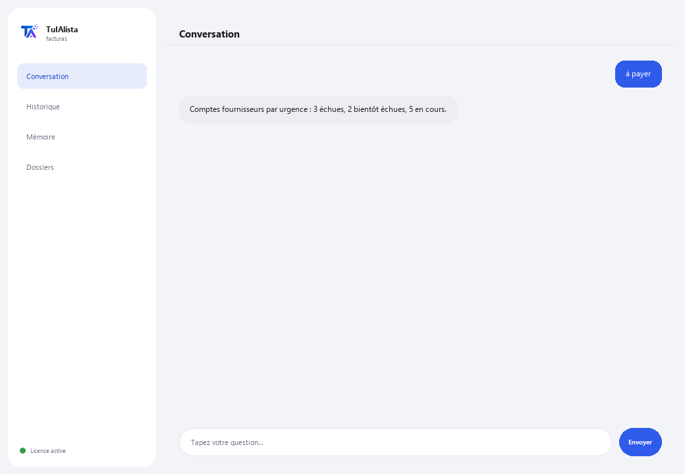

Agent Factures et Comptes fournisseurs
Dites-lui ce dont vous avez besoin avec vos mots et il vous prépare l'Excel des factures, le résumé des taxes et les comptes fournisseurs — sans rien saisir à la main.
Que résout-il et de quoi avez-vous besoin ?
Saisir des factures à la main dans Excel prend des heures et il est facile de payer deux fois la même ou de manquer une échéance. Cet agent lit vos XML de CFDI et PDF de factures, et vous prépare l'Excel de saisie, le résumé des taxes et les comptes fournisseurs — vous lui écrivez ce dont vous avez besoin comme à une personne, pas des commandes exactes.
- Vous avez besoin de : votre clé de licence (TIA-XXXX-XXXX-XXXX-XXXX) et du dossier contenant vos factures (XML de CFDI et/ou PDF). Ni Python ni connaissances techniques.
- Premier résultat en moins de 5 minutes : vous installez, activez, choisissez votre dossier et écrivez exporte pour qu'il prépare l'Excel complet.
- Vos factures ne quittent jamais votre ordinateur — l'analyse s'exécute localement.
soporte@tuialista.com ou visitez tuialista.com/soporte — nous répondons généralement le jour même.1 Ce que fait cet agent
Vous lui indiquez le dossier contenant vos factures (XML de CFDI du SAT et/ou PDF) et il :
- Saisit chaque facture dans un Excel ordonné — ce qui se fait normalement à la main en des heures : numéro, fournisseur, identifiant fiscal, dates, sous-total, TVA, retenue, total et devise.
- Résume les taxes de la période, en additionnant ce que déclare chaque facture par devise (base, taxe, retenue, total).
- Prépare vos comptes fournisseurs avec des alertes sur ce qui est échu et ce qui arrive bientôt à échéance.
- Détecte les factures en double.
- Répond à toute question ou demande sur votre portefeuille de factures avec vos propres mots — pas besoin de mémoriser des commandes.
Le travail de saisie et de calcul suit des règles fixes déjà éprouvées, sur votre ordinateur (n'utilise pas l'IA, ne se trompe pas par invention) : il lit le XML de CFDI de façon exacte et toute facture PDF par lecture du texte. Résultat : vous payez à temps, sans doublon, avec votre Excel de factures prêt sans le saisir vous-même.
2 Installation (2 minutes)
Pour Windows. Pas besoin d'internet permanent ni de rien envoyer sur le cloud.
Téléchargez l'installateur depuis tuialista.com/descargar (agent Factures) et ouvrez-le. Il crée un raccourci sur votre bureau avec le logo — pas besoin de Python ni de terminal.
Double-cliquez sur la nouvelle icône. Collez votre clé de licence (reçue par e-mail à l'achat) et cliquez sur Activer. Une coche verte apparaît quand elle est valide.
Sélectionnez le dossier contenant vos factures et cliquez sur Commencer à utiliser l'agent. La prochaine fois, il démarre directement — il se souvient de votre clé et de votre dossier.
3 Comment l'utiliser
L'agent ouvre une fenêtre de discussion, comme une app de messagerie — pas un écran noir de programmeur. Pas besoin de mémoriser des commandes exactes : vous lui écrivez ce dont vous avez besoin presque comme vous le demanderiez à une personne, cliquez sur Envoyer (ou Entrée), et il fait le travail. Voici les 4 choses principales qu'il sait faire, avec des exemples de formulation :

> exporte / génère l'Excel / saisis-lesPrépare un Excel avec tout : saisie de chaque facture, résumé des taxes et comptes fournisseurs, prêt à ouvrir.
> taxes / combien de TVARésumé des taxes de la période : base, taxe, retenue et total, additionné par devise.
> à payer / qu'est-ce qui échoit / combien je doisVos comptes fournisseurs, le plus urgent en premier : échues, bientôt échues et en cours, avec fournisseur et montant.
> doublons / factures répétéesDétecte les factures qui semblent chargées deux fois (même numéro/UUID, ou même fournisseur et total).
> toute autre questionEx. : “combien je dois à ACME”, “total par fournisseur”, “compare ce mois-ci au précédent” — l'agent comprend la demande et prépare la réponse ou le rapport.
Vous voulez voir les 20 recettes complètes avec un exemple réel de chacune ? Consultez le Catalogue de recettes — un document à part vu sa longueur : catalogo_recetas.pdf à côté de ce manuel, ou la version interactive sur tuialista.com/guia/facturas/recetas.
4 Exemples d'usage courant
Préparer l'Excel complet du mois
“exporte” — vous obtenez un Excel avec saisie, taxes et comptes fournisseurs, prêt à vérifier ou à envoyer à votre comptable.
Révision hebdomadaire des paiements
“à payer” → “doublons”
Clôture mensuelle des taxes
“taxes de la période”
Une requête ponctuelle
“combien je dois à ACME ce mois-ci ?”
5 Questions fréquentes
Mes factures sont-elles envoyées sur internet ?
Quels formats accepte-t-il ?
Dois-je écrire la commande exacte ?
Détecte-t-il les doublons de façon fiable ?
Exécute-t-il des paiements ?
Dans quelle langue répond-il ?
Lit-il un PDF scanné ?
Modifie-t-il mes factures originales ?
Puis-je changer le dossier ?
Qu'est-ce que le “mode sûr” ?
6 Résolution de problèmes
Un fichier ne se lit pas
Indique qu'il n'a trouvé aucune facture
Une donnée de facture est mal détectée
Affiche “Licence invalide” ou demande de se reconnecter
L'IA ne répond pas à une question libre
Aucune de ces solutions n'a résolu votre problème ? Écrivez-nous directement — nous serons ravis de l'examiner avec vous.
soporte@tuialista.com ou visitez tuialista.com/soporte — nous répondons généralement le jour même.7 Confidentialité
Vos factures ne quittent jamais votre ordinateur.
- L'agent lit et traite les factures localement, sur votre propre appareil. Il ne les envoie à aucun serveur.
- La saisie dans Excel, le résumé des taxes, les comptes fournisseurs et les doublons sont calculés sur votre machine, avec des règles fixes déjà éprouvées (sans IA).
- La seule chose qui transite par internet est : (1) une vérification que votre licence est active — qui n'inclut pas vos factures —, et (2) si vous demandez quelque chose hors des 4 actions principales (une question libre), un fragment de l'information pertinente est envoyé au moteur d'IA pour pouvoir répondre.